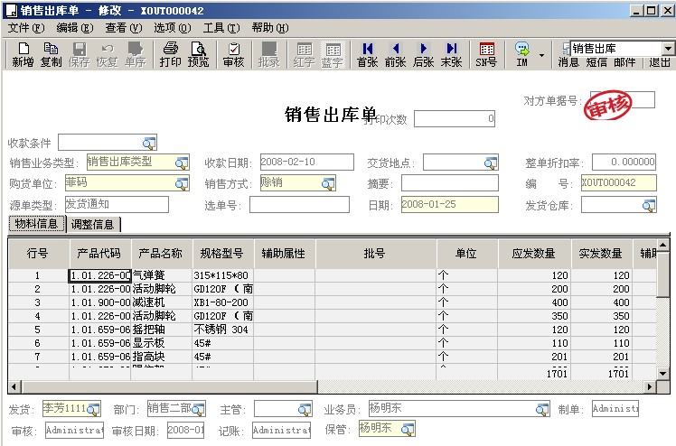

简介
关注企业管理软件，关注企业信息化，分享在企业信息化领域的想法、观点和经验。致力于分享、交流、提供、实现企业信息化解决方案， 探索并实践移动互联网浪潮下企业管理软件的发展！
十多年金蝶二次开发经验，精通工业老单据开发、BOS单据开发和主控台外挂开发，对金蝶内部业务逻辑和技术有一定的理解。七八年互联网及移动开发经验，手机APP、微信小程序都有涉及，没有做不到，只有想不到。

开发展示
[工业单据增加单据体]
金蝶K3工业单据体增加多页签，增加自定义单据体，方便显示多条单据相关信息。


[工业单据增加二维码]
金蝶K3工业单据单据头增加自定义图标字段，显示如快递单号的条形码或者二维码单号等图标。

[工业单据显示物料图片]
金蝶K3工业单据单据体实现当鼠标移动到物料代码字段区域时，自动显示对应分录的物料图片，鼠标移动到其他区域时，窗体会自动消失。

[工业单据自定义物料下拉框]
金蝶系统本身的下拉框仅仅显示物料代码、名称和规格型号，当客户希望增加其他信息时或者希望按照客户自己输入的信息进行快速检索（输入的而非物料代码，如输入的是拼音简称）时就不太好处理，开发实现根据输入的规格型号进行模糊过滤显示物料信息。

[基础资料增加单据体]
金蝶基础资料开发增加单据体，方便维护此资料对应的多条信息，如在客户基础资料上维护客户的联系人或者客户的收货信息等等，这些信息大多是由多条记录组成，增加一个单据体，非常清晰方便。

推荐阅读:
改造单据录入之快速录单
快速选单生成目标单据
工业老单据序时薄增加过滤条件
工业老单据序时薄隐藏列内容
以上仅仅是部分展示，更多内容请关注微信公众号。